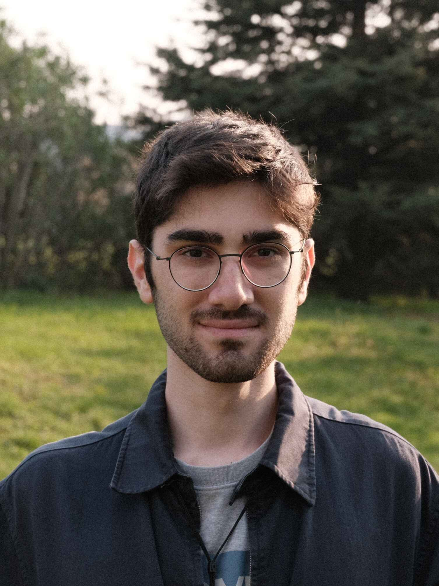

I am a Computer Science and Engineering graduate from Sabancı University, currently pursuing a double major in Industrial Engineering. My research interests lie at the intersection of natural language processing, network science, and data science. I have experience developing large-scale datasets and building machine learning systems for both academic research and industry applications.
Currently, I am working as an undergraduate researcher at the VRL Lab at Sabancı University, where I led the development of a comprehensive diplomatic dataset with over 1.19M images and 1.17M articles, resulting in a publication accepted at Nature Scientific Data. I am passionate about extracting meaningful insights from complex data and applying machine learning techniques to solve real-world problems.